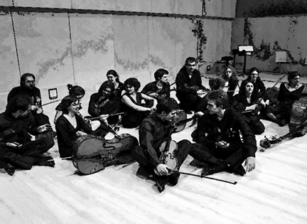

POPOFF, UN COMPOSITOR DESPISTAT
Intèrprets:
Quim Térmens, concertino.
Orquestra de Cambra Terrassa 48.
Programa:
Amb una petita introducció al funcionament d'un concert, la finalitat de Popoff és d'obrir les finestres del
llenguatge, els seus matisos i les seves estructures.
Sabrem com són, com sonen i d'on vénen un Minuet, la Sarabanda, el Rigaudon, la Siciliana, el Rondó,
la Gavotta..., i també podrem jugar amb les partitures i fer-les sonar de maneres diferents com si
nosaltres fóssim els compositors.
Durada:
50 minuts.
Adreçat a:
Infants de 6 a 10 anys.